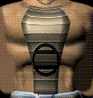
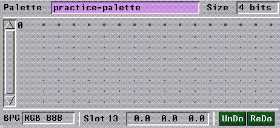

[N-World Contents] [Book Contents] [Prev] [Next] [Index]
Using Color Reduction
N-Paint's Color Reduction System generates color mapped images from full color images. You can color reduce a single image, or a whole group of images, and images can have their own palettes or share a single palette.
In this Chapter
In this chapter, you'll learn how to:
Reducing a Series of Images
In this example, we'll reduce a series of three small images which were built from a larger source image. First, we'll build a palette from the images, then reduce them using the new palette.
1. (CLICK-L) on Color Reduction in the N-Paint Modes Menu.
- The Color Reduction menu appears:
Figure 10.1 The Color Reduction menu
Creating the Color Reduction Histogram
The Color Reduction histogram is an abstract structure which stores information about the relative frequency of RGB colors in an image. The histogram is used to generate the reduced palette of colors to which colors in the source image will be mapped. You can create the histogram with a single image, or create a cumulative histogram which contains information about several images. In this case, we'll need to build a cumulative histogram which stores color information for all three of our images.
Clearing the Histogram
First, we'll clear the current histogram to ensure that unwanted color data isn't left behind from another color reduction session.
2. (CLICK-L) on the Oper field in the Color Reduction Operations section of the Color Reduction menu.
- The Select Color Reduction Operation pop-up menu appears:
Figure 10.2 The Select Color Reduction pop-up menu
3. (CLICK-L) on Clear Histogram.
4. (CLICK-L) on Do It.
Loading the First Source Image
5. (CLICK-L) on Image>Open Image.
- A Choose Directory and Name dialog box appears:
Figure 10.3 Choose Directory dialog box
- (CLICK-M) on the Directory field to clear it, then type in the following directory
/usr/local/ngc/demo/images/
6. (CLICK-R) on the Name field.
- A list of images in the current directory appears. (CLICK-L) on the following image:
f-chest.rgb
The f-chest.rgb image appears on the canvas. This is the chest section taken from a larger image.

Figure 10.4 The f-chest.rgb image
7. (CLICK-L) on Full to toggle the display to full color mode.
- By default, N-Paint automatically remaps images to the current palette when you load them in Color Reduction mode. Thus, you'll see the reduced version of the image on the canvas after this operation. Just toggle N-Paint to full color display mode to see the image in full color.
- You can prevent N-Paint from automatically remapping images when they are loaded by turning off Auto Remap in the N-Paint Setup Menu.
- Note: If the current palette is left over from another session, the colors may not match those in a newly loaded source image at all, resulting in unpredictable color mapping.
8. (CLICK-L) on Oper>Add Colors to Histogram.
9. (CLICK-L) on Canvas>Full.
10. Make sure that the Use matte toggle is OFF.
- The Matte toggle is located below and to the right of the Oper field. If it is highlighted in a shade of blue, (CLICK-L) on in to toggle it.
11. (CLICK-L) on Do It.
The colors from the chest image are added to the histogram. At this point there's no way for you to see the result of this operation. Its effects won't be apparent until we use the histogram to build a palette.
Now we need to add the colors from our remaining two images to the histogram.
12. Repeat steps 5 through 11 for the remaining two image files.
- Load the following images:
/usr/local/ngc/demo/images/f-helmet.rgb
/usr/local/ngc/demo/images/f-skirt.rgb
Creating the Combined Palette
Although N-Paint creates a blank palette when you load an image, let's create a new, blank palette. This is the palette we'll use to reduce our images later.
13. (CLICK-L) on Palette in the Palette operations section of the Color Reduction menu.
Figure 10.5 The Palette section of the Color Reduction menu
- The Palette Operations pop-up menu appears:
Figure 10.6 The Palette Operations pop-up menu
14. (CLICK-L) on Create New.
- Enter the directory and name for the palette in the dialog box that appears:
Figure 10.7 The Enter New palette name dialog box
15. (CLICK-L) on Size in the Palette section of the menu.
- The Choose Palette Size pop-up menu appears:
Figure 10.8 The Choose Palette Size pop-up menu
16. (CLICK-L) on 4-bits.
- This limits our palette to 16 colors. The new, empty palette appears in the center of the palette operations section of the color reduction menu.

Figure 10.9 The empty reduced-palette
Filling Palette Slots from the Histogram
We're ready to use the histogram we generated earlier to fill the slots in our empty palette. Because the histogram contains color information from all three images, the resulting palette will reflect the "best guess" colors for all three images.
17. (CLICK-L) on Oper>Set Palette Slots from Histogram.
18. (CLICK-L) on Slots>All.
19. (CLICK-L) on Do It.
- N-Paint fills the palette slots with the 16 colors which best match the colors in the original three images.

Figure 10.10 The Reduced palette
Generating the Reduced Images
Now we're ready to use the new palette to create color reduced versions of our source images.
20. (CLICK-L) on Image.
- The Image Operations pop-up menu appears:
Figure 10.11 The Select Image pop-up menu
21. (CLICK-L) on Select Image Only.
- A pop-up menu appears listing images loaded into memory. Select the f-chest image from the list.
- Note. If Auto Remap is ON in the Paint Setup menus, then the image will automatically be reduced and remapped to the current palette.
If Auto Remap is OFF, then you will have to remap the images manually. To do so, (CLICK-L) on Oper>Remap Canvas, then (CLICK-L) on Do It.
22. (CLICK-L) on the Full and Reduced buttons near the bottom of the menu to see the difference between the full color and reduced versions of the image.
23. (CLICK-L) on Image>Save Reduced Image as.
- Use the Save Image As dialog to specify a directory, filename, and format for your reduced image.
- Note: Remember, you cannot save images to the
/usr/local/ngc/demo/images directory. Save your reduced images to directories for which you have adequate write permissions! If you have any questions, see your system administrator.
24. Repeat 20 through 23 for the following images:
f-helmet.rgb
f-skirt.rgb
While in memory, N-Paint keeps both a full-color version and a reduced color version of the same image. This is what makes it easy to flip back and forth between the two versions of the image. This is why you have both Save and Save Reduced Image commands-you need to tell N-Paint which version you want to save.
Note also that if you read a reduced palette image into N-Paint, it is automatically converted into an image with full palette depth; if you use Save to save such an image, it will be saved as a full-depth image.
Saving the Palette
The palette we just created is an integral part of the color-reduction process. We may need it again in the future, so let's save it.
25. (CLICK-L) on Palette>Save in the Palette section of the menu.
- The palette is saved to the location you specified when you created it.
- If you want to save the palette to a different location, (CLICK-L) on Save As, and enter a new directory and filename in the dialog which appears.
- Palette files have the extension .palette.
Manipulating Slot Values
Now that you have created a reduced palette, you can fine tune it to ensure that the color-reduced image is as faithful a representation of the original as it can be.
1. (CLICK-L) on Image>Select Image Only.
- Select the f-helmet image from the pop-up list which appears.
2. Beginning at the leftmost slot on the palette, (CLICK-L) on each color.
- As you (CLICK-L) on each slot, the areas of the canvas which use that slot are highlighted. You can use this feature to get a feel for how much of the canvas uses a particular color. You may find several slots to be redundant, which means you can combine them and use the extra space in the palette for more important colors.
Optimizing the Palette
- We can optimize the colors in the palette slots so that more are devoted to the areas we want to focus on and less to the background. First, though, it might be easier to visualize which colors are redundant by sorting the Palette slots in color order.
3. (DRAG-L) across the slots in the palette and select them all.
4. (CLICK-R) over the highlighted slots.
- The Slot Operations pop-up menu appears:
Figure 10.12 Slot Operations pop-up menu
5. (CLICK-L) on Sort.
- The Sort By pop-up menu appears:

Figure 10.13 Sort Slots pop-up menu
6. (CLICK-L) on Red, set Direction to Up, then (CLICK-L) on Do It.
- The slots in the palette are sorted from least amount of red on the left to greatest amount of red on the right.
- To confirm this, (CLICK-L) on a slot on the left side of the palette and compare its RGB value with a slot further to the right (RGB values are displayed for each slot in the Slot field near the bottom of the Palette section of the menu).
- Our sorted palette row looks like this:
Figure 10.14 Our reduced, sorted palette row
7. Examine the colors in the palette.
- Note how there are several slots allocated to some of the darker areas of the image, and comparatively few for the flesh tones and metallic colors of the face and helmet.
- We'll reset some of the palette slots using a larger number of the palette slots on the right of the palette.
8. (DRAG-L) on the eight slots on the right half of the palette.
- These slots are highlighted. Unfortunately, the highlighting on the canvas obscures the area we want to work with, so let's turn highlighting off.
9. To toggle canvas highlighting, (CLICK-r) over the selected slots, then (CLICK-L) on Unhighlight Canvas.
10. (CLICK-L) on Full.
- We'll need to see the full color image to get a true idea of which colors we want to include.
11. (CLICK-L) on Oper>Set Palette Slots & Remap Canvas.
12. (CLICK-L) on Slots>Selected.
- This constrains the Set Palette slots operation to the selected slots.
13. (CLICK-L) on Canvas>Poly
- This lets you use a polygon to define an irregular part of the canvas to use for the Set Palette Slots and Remap Canvas operation. The Color Reduction Operations menu changes slightly to provide a means for you to define the polygon.
Figure 10.15 Color Reduction Operations menu with Poly selected
14. (CLICK-L) on Do It.
15. Using the mouse, draw a polygon which encompasses as much of the fighters face and neck as possible.
- The polygon tool works in exactly the same manner as it does in Tools mode.
16. If you aren't happy with the results, you can (CLICK-L) on UnDo to undo your action.
- Undo works the same way in Color Reduction mode as it does for Paint Tools mode. Depending on how you've configured N-Paint, you can Undo as many as 30 operations.
Picking Colors for Slots from Full-Color Images
Examine the areas around the horns and the band of the fighters helmet. One of the results of the color reduction process is a general reduction in intensity and contrast in this area. We'll select two palette slots, and then reset them to colors we'll pick from the metallic areas of the original full-color image.
17. Find a palette slot near the left (darkest) end of the palette row.
- Use Canvas Highlighting to ensure that the slots you pick are underutilized. In our palette, slots 3 and 4 worked well.
18. (CLICK-L) on the slot to select it.
19. (CLICK-R) on the slot, then (CLICK-L) on Pick Color from the Slot Operations pop-up menu.
- Use the Color Picker to select a bright color from the metallic areas of the helmet.
- If you need to zoom in to see what you're doing more clearly, use the "z" hot key. You can zoom back out with the (CTRL-Z) hotkey.
20. (CLICK-L) on Oper>Remap Canvas, then (CLICK-L) on Do It.
- The image is remapped, hopefully increasing the highlight and metallic quality of the horns and helmetband.
- Note: If you modify the palette, you will have to repeat the remap process for each of the images you want to use that palette.
Using Dithering
You can also change the visual quality of the image by manipulating the dithering level.
1. If it is not already on, toggle Dithering with a (CLICK-L) on the Dither toggle to the right of the color reduction operations section of the menu.
2. (CLICK-L) on the number field to the right of the dither toggle.
- A numeric keypad appears. Use it to enter a value between 0 and 1 for the level of dithering to use.
3. (CLICK-L) on Oper>Remap Canvas.
- You must remap the canvas to see the effect of using dithering.
- Note: Unlike the gamma and gain corrections made when you select a target platform (which merely simulate different hardware parameters), dithering actually affects the color value of the pixels in the reduced image.
Adjusting Gamma
Different game platforms have different gamma values, which directly affect the way your images will look on them.
1. (CLICK-L) on the Target field in the lower right corner of the menu.
- The Select Target Platform pop-up menu appears:
Figure 10.16 Select Target Platform pop-up menu
2. (CLICK-L) on a platform to select it.
- Remember that changing the gamma value in this manner in no way changes the image, only the manner in which it is displayed on the SGI monitor.
Transparency
Full-color, four-component images have a matte channel, which you can use to control transparency in various situations. For example, when you use the matte to composite an image, only the portion of the image under the matte is composited onto the background image.
LBM and BMP files do not provide for a matte channel. Instead, they use a single color to serve as a transparency color (usually color 0, or RGB 0.0 0.0 0.0). Usually, you'll want this color to be the background color of your sprite or other two dimensional image.
The problem is that the LBM transparency color, RGB 0.0 0.0 0.0, is, of course, black. How do you make your black backgrounds transparent without making those portions of your images which contains black transparent as well? You can solve this problem by using the matte to control how your images are reduced.
1. Load the following image:
/usr/local/ngc/demo/images/f-helmet.rgb
- This image has a matte already defined for it. Of course, if your images don't, you'll have to create the necessary mattes.
2. (CLICK-L) on the Size field, and select 4 bits.
3. (DRAG-L) on all but the leftmost slot in the palette.
- Before we define the background color, we'll set the palette slots and remap the canvas for the rest of the image.
4. (CLICK-L) on Slots>Selected.
- The Selected button will be highlighted in a shade of blue when it is selected.
5. Set the Matte to Use and View modes.
- Make sure the Use and View buttons are highlighted. If they are not, (CLICK-L) on each button to toggle it.
6. (CLICK-L) on Oper>Set Palette Slots & Remap Canvas.
7. (CLICK-L) on Do It.
8. (CLICK-L) on the Rev button to reverse the matte.
- Reversing the matte results in a matte which covers the background of the image.
Figure 10.17 Left, normal matte; right, reversed matte (white indicates area covered by matte)
- Now, the matte covers the background of the image, which are the pixels we want to map to our new transparency color.
9. Select the leftmost slot in the palette.
- The choice of the leftmost palette slot for the transparency color is strictly arbitrary. However, it's usually a good idea to select an out of the way slot, or to maintain some sort of consistent procedure to avoid confusion in the future.
10. (CLICK-L) on Slots>Selected.
11. (CLICK-L) on Oper>Set Palette Slots & Remap Canvas.
12. (CLICK-L) on Do It.
At this point, you may notice that some of the pixels in the non-background areas of the image are mapped to the new background color. The next few steps will ensure that these pixels are mapped to appropriate slots.
13. (CLICK-L) on your background color slot.
- In this example, we've been using the leftmost slot of the palette.
14. Make sure the matte covers the background of the image.
- If necessary, (CLICK-L) on Rev to reverse it.
15. Make sure the matte is in Use mode.
16. (CLICK-L) on Oper>Remap Canvas.
17. (CLICK-L) on Slots>Selected.
18. (CLICK-L) on Do It.
19. (DRAG-L) on the remaining slots.
- Make sure that the leftmost (or your transparency slot) is not selected.
20. Reverse the matte so that it covers the foreground portion of the image.
21. (CLICK-L) on Slots>Selected.
22. (CLICK-L) on Do It.
Now, all the palette slots except the leftmost slot map to pixels in the foreground of the image. Only a single palette slot is used to represent the background of the image.
The LBM 0 color is equivalent to RGB 0.0 0.0 0.0, so we'll need to make sure that our transparency color matches this specification.
23. (CLICK-M) in the Slot field near the bottom of the Palette section of the menu.
Figure 10.18
- Note: This field contains the RGB triplet for the selected slot. It displays the RGB value as a triplet of absolute values (0-255), or as a relative percentage (0-1). (CLICK-R) To toggle the RGB value display mode.
24. Enter a value of 0 0 0 in the Slot field.
- This sets the value of the slot to RGB 0.0 0.0 0.0, which is the desired LBM transparency color.
Your image now has a transparent background!
Manipulating Slots
The following section shows you how to manipulate palette slots in several useful ways.
Deleting Slots
You may want to delete slots in your palette to make room for new colors. To delete a slot,
1. (CLICK-L) on the slot you want to delete.
- Remember:
2. (CLICK-R) over the slot, then (CLICK-L) on Cut.
- The slots are deleted from the palette, which now has empty slots.
Figure 10.19 Empty slots
Moving Colors
You may want to move a color from one slot to another.
To move a color:
1. (CLICK-L) on the color you want to move.
2. Move the cursor over the slot you wish to move it to, and (SHIFT-M).
- The color will be inserted into the slot under the cursor. If that slot is occupied, the color in the slot is bumped to the side to make room.
Copying Colors
You can cut, copy and paste colors with ease. Cutting a color copies it to memory and deletes it from the palette, while copying does not delete the color from the palette.
To cut or copy a color:
1. (CLICK-L) on the slot you want to cut.
2. (CLICK-R) on the slot (or slots) you select, and (CLICK-L) on Cut or Copy.
To paste a color you've cut or copied:
1. Position the cursor over the slot you want to paste the color into.
2. (CLICK-R) on the slot, then (CLICK-L) on Paste.
- Remember that you must select the same number of target slots as colors you wish to paste. In other words, if you copy three colors, you must highlight three slots before you paste the colors into the palettes.
Using the Scratch Palette
You can use the scratch palette to save colors to use between palettes, or to preserve colors you want to delete from the current palette but use later. The scratch palette, located to the left of the current palette, functions in exactly the same way.

Figure 10.20 The scratch palette
Compacting the Palette
If you find yourself with a palette that has several gaps in it, you can easily compact it so that all the empty slots are located at the end of the palette.
To compact the palette:
1. Select the range of slots you want to compact.
- (CLICK-L) or (DRAG-L) to select the slots. If you want to compact the entire palette, select all the slots.
2. (CLICK-R) over the palette, then (CLICK-L) on Compact.
- The slots are compacted to the beginning of the palette.
Figure 10.21 Top, palette before compaction; Bottom, palette after compaction
Congratulations!
You are now qualified to use N-Paint to color reduce images!
[N-World Contents] [Book Contents] [Prev] [Next] [Index]
 Another fine product from Nichimen documentation!
Another fine product from Nichimen documentation!
Copyright © 1996, Nichimen Graphics Corporation. All rights
reserved.